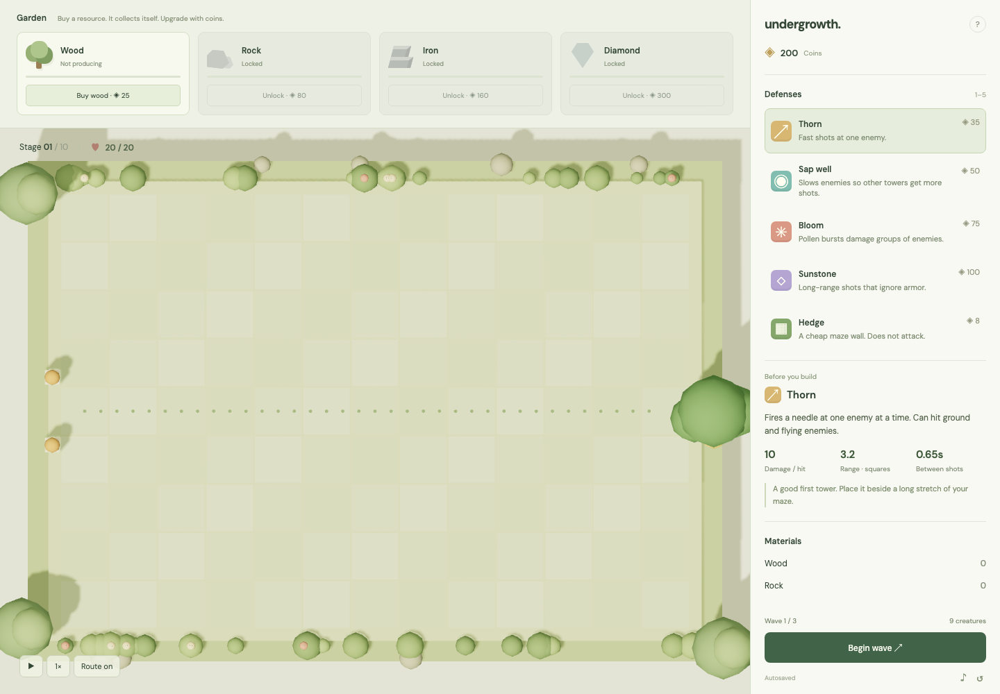
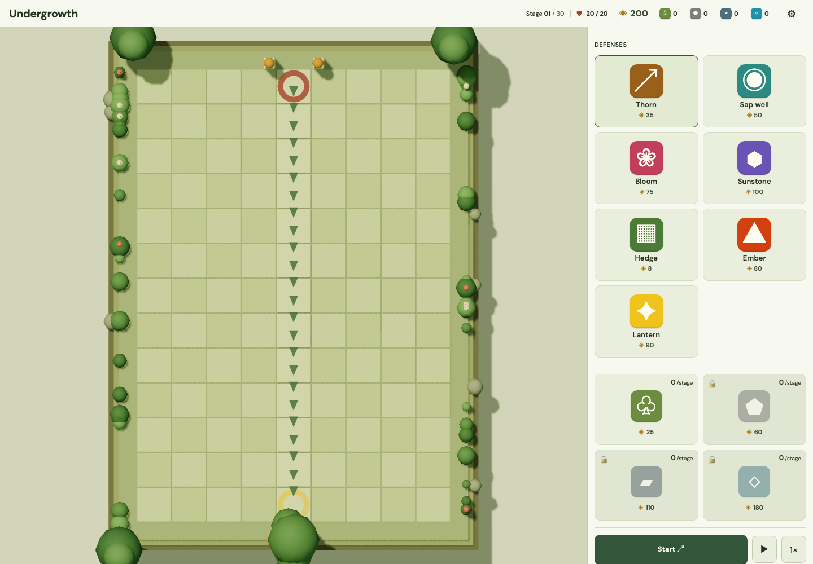
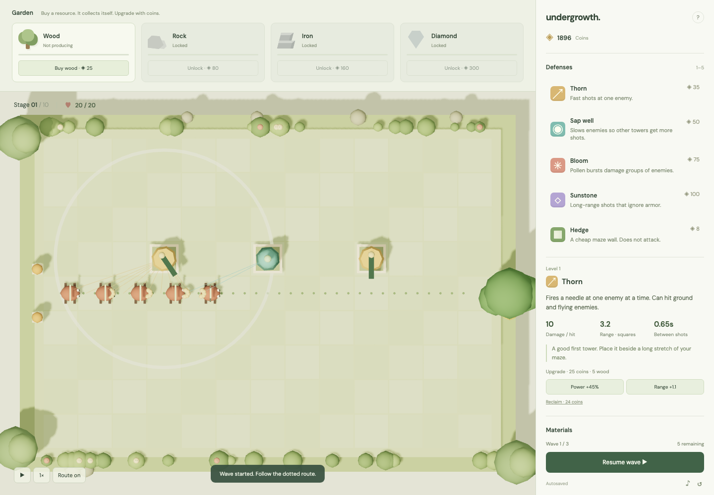
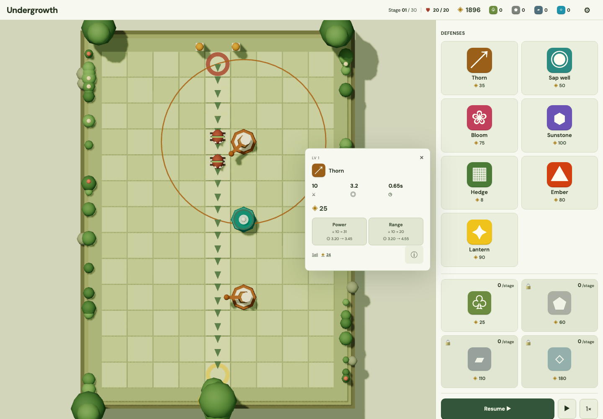
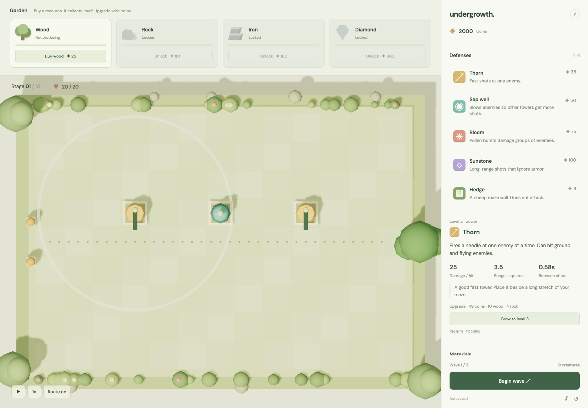
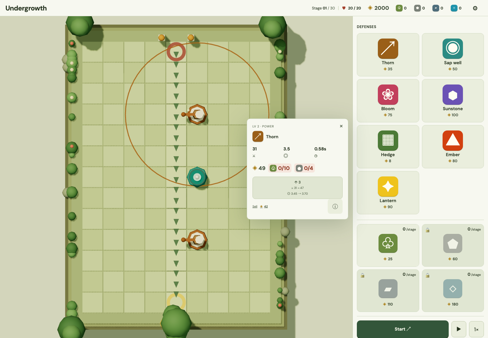
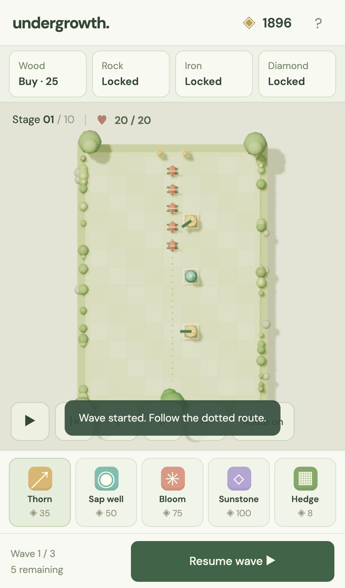
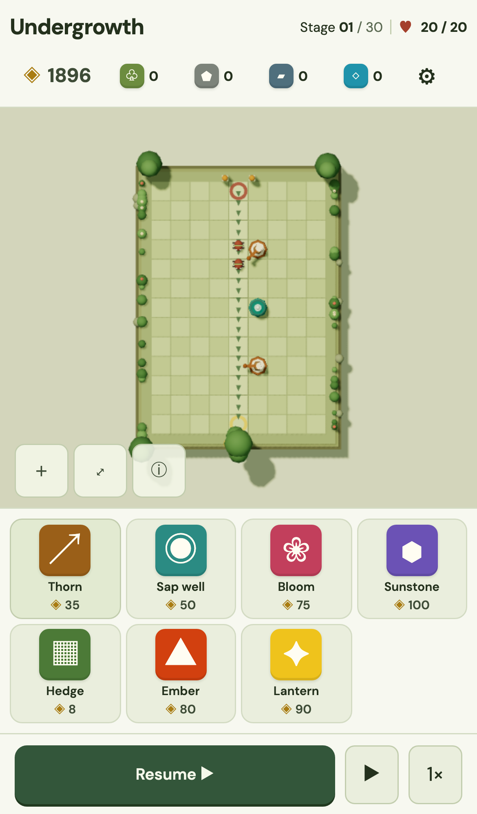

How a small tower defence garden was rebuilt, round by round: what changed, what it scored, how it looked before and after, and what the headless simulator says about the difficulty curve.
Selling refunds 100% of coins spent on the tower, including all coin upgrade costs.
Material cards now use a large clickable resource icon, the coin price underneath, and a small amount-per-stage badge. No visible material names or levels; names remain in accessible labels and hover hints. The same card buys, unlocks, or upgrades the relevant farm.
Latest header: Undergrowth at top left; stage and lives precede gold and materials; Settings is last on the right. On narrow phones this wraps into two rows. The bottom bar has three buttons: Start, Pause/Resume, and Speed (1× → 2× → 3× → 1×). No Space pause shortcut. Settings and tab visibility still suspend gameplay automatically. This supersedes the earlier no-name header and removal of pause/speed decisions.
Progression is presented as 30 stages, one encounter per stage. Remove the separate wave counter and creature counts. Buttons, harvest output, help, and victory copy use “stage.” The engine/save/simulator retain their legacy 10 groups of 3 encounters to preserve balance and existing saves. Convert legacy group/wave to player stage as groupIndex × 3 + waveNumber. Workbench outcome tables use player stages; raw simulator group records remain legacy data. Harvest timing, enemy order, and every-third-encounter bonuses are unchanged.
Current layout: the board runs vertically, entrance at the top and exit at the bottom, on every screen. Desktop farm cards form a two-column grid at the bottom of the side pane, below defenses and above the wave button. Short windows can scroll defenses independently. No Garden heading; the game name appears only in the top bar. Gold and materials share a top-right header. Defenses use large-icon grid cards without visible keyboard shortcuts. Material harvests appear on the same row as each farm name, aligned right, with no level label. On phones the header material buttons open farm controls; the duplicate resource strip is gone.
Updated 2026-09-08 at the owner's request: keep the game simple.
Economy: farms harvest once after a completed wave, never on a timer. Base yields per farm level are Wood 3, Rock 3, Iron 2, Diamond 1. Levels are snapshotted at wave start; midwave purchases/upgrades apply next wave. Losing pays nothing. Waiting between waves or prolonging combat cannot increase the harvest. Keep these rules in every scaling run. The idle-20s experiment must match baseline exactly. Current kit-maze wins with seven lives lost across stages 8, 9, and 10; no enemy or upgrade-cost changes were needed.
Interface: minimize visible text. Costs use resource icons and numbers; shortages show owned/required counts. No wave previews or music controls. Settings contains route visibility, restart, help, and autosave status. Detailed tower information is available on demand.
Rootgrip and Sunburst are removed. There are no player abilities. Their buttons, Q/E shortcuts, targeting mode, cooldowns, and root effect no longer exist in the game. Do not reintroduce them or assume their damage or crowd control when tuning difficulty.
Historical round reports, task notes, and screenshots can mention the old abilities. Those are history; this current-rules note and the live simulator take precedence.
Current rules source · Measured balance data
1 of 7 scripted strategies win all 30 stages, and every winner bleeds on the way. That is the whole point of the curve.
| Strategy | Outcome | Stages cleared | Lives lost | Kills | What it does |
|---|---|---|---|---|---|
naive | lost in stage 21 | 20 | 20 | 305 | A few Thorns beside the straight route. Upgrades when affordable. No farm. |
maze | lost in stage 26 | 25 | 22 | 471 | Serpentine hedge walls with Thorn, Sap and Sunstone in the wall. Buys wood and rock so it can upgrade. |
maze-deep | lost in stage 30 | 29 | 24 | 571 | The maze plan plus the full garden from stage 5, the only way a Sunstone can reach level 3. |
farm-first | lost in stage 3 | 2 | 20 | 0 | Wood then rock then iron then diamond, fully upgraded, before any tower is bought. |
farm-lite | lost in stage 26 | 25 | 21 | 462 | Two Thorns first, then the wood and rock plots, then the maze. Farming without going undefended. |
reach-maze | lost in stage 24 | 23 | 20 | 404 | The maze plan with the reach upgrade branch instead of power. Shows what the damage cap costs. |
kit-maze | won all 30 stages | 30 | 7 | 597 | The r2 maze: the same walls and slots, but with two Embers and a Lantern. No abilities. |
| Item 1 | Item 2 | Item 3 | Item 4 | Item 5 | Item 6 |
|---|---|---|---|---|---|
| 10 | 9.5 | 9 | 10 | 10 | 10 |
Historical round record. The current game rules above supersede retired features and old balance results.
v1 stays untouched at `personal/undergrowth/`. v2 is a verbatim clone at `personal/undergrowth-v2/` (git, baseline commit cd2659a). Four workstreams were agreed: make it winnable, make it richer, ship it, make it prettier. This round lays the floor the other three stand on.
This round changed no game rules, so it has no changelog entry.


The board on opening the game.
| Item 1 | Item 2 | Item 3 | Item 4 | Item 5 | Item 6 |
|---|---|---|---|---|---|
| 8.5 | 9.5 | 9 | 9 | 9 | 9.5 |
Historical round record. The current game rules above supersede retired features and old balance results.
Round r2 acts on fleet-r1-foundation/sim/BALANCE-REPORT.md. The r1 game had a hidden gate (every upgrade needed wood, so a player without a garden was frozen at level 1) and a flat difficulty that turned vertical in stage 10. node tests/balance-gate.mjs is green on this tree.
Every number below is old value first, then new value.
| Rule | r1 | r2 |
|---|---|---|
| Enemy hit point growth per stage | 1.43 | 1.46 |
| Level 1 to 2 upgrade materials | 5 wood per level | none, coins only |
| Level 2 to 3 upgrade materials | 10 wood, 4 rock, iron and diamond by type | unchanged, plus 3 iron for Ember |
| Upgrade damage step per level | 0.75 | 1.0 |
| Power branch damage bonus | 1.45 | 1.55 |
| Rock plot unlock | 80 coins | 60 coins |
| Iron plot unlock | 160 coins | 110 coins |
| Diamond plot unlock | 300 coins | 180 coins |
| Moth hit points at stage 1 | 25 | 30 |
| Moth coins per kill | 4 | 5 |
| Guardian (boss) hit points at stage 1 | 450 | 400 |
| Coins per kill | flat 4, or 55 for a boss | per creature, see the enemy table below |
| Armor absorption of a non Sunstone hit | 0.55, written inline | 0.55, now the named ARMOR_RESIST |
| Save file version | 2 | 3 |
The level 1 to 2 change is the report's change 1 and it is the largest single fix. In the simulator's r1-upgrade-mats experiment, putting the r1 wood bill back drops the naive strategy from losing at stage 7 to losing at stage 5.
The spawn formula is gone. It was:
count = 7 + stage * 2 + wave * 2
kind = grub, then runner at i % 4 === 2, armor at i % 5 === 3, moth at i % 6 === 4,
more moths at i % 3 === 1 from stage 8, boss on the last slot of stages 6 and 10
gap = max(0.35, 0.95 - stage * 0.045) for every wave in the gameIt is replaced by WAVES in src/game.js: 30 hand written entries, three per stage, each one a list of creatures in the order they walk out plus its own gap in seconds and an optional burst count for waves that release in pairs. Gaps now range from 1.05 s in stage 1 wave 1 to 0.55 s in the late waves, and bursts of 2 start in stage 5. Wave sizes run from 6 creatures in stage 1 wave 1 to 18 in stage 10 wave 3, which is fewer bodies than r1's 31 but far more hit points each.
Guardians now appear only where the stage text says so: stage 6 wave 3, stage 9 wave 3, and two of them in stage 10 wave 3. In r1 they appeared in stages 6 and 10 only, and the stage 9 text promised nothing.
Stage text changed to match what actually spawns:
| Creature | HP at stage 1 | Speed | Coins | Rule |
|---|---|---|---|---|
| Brood sac | 88 | 0.70 | 7 | Bursts into 3 grublings where it dies |
| Grubling | 9 | 1.35 | 1 | What a brood sac leaves behind |
| Warden | 104 | 0.82 | 8 | Immune to Sap slow, and takes 35% off every hit landed on any enemy within 2.1 squares of it |
The counters: Bloom splashes 1.35 squares, so one burst clears a whole litter where a Thorn kills one grubling. Ember burning is applied outside the hit loop, so it ignores both beetle armor and a warden's shield.
| Tower | Key | Cost | Damage | Range | Rate | Rule |
|---|---|---|---|---|---|---|
| Ember | 6 | 80 | 9 | 2.9 | 1.20s | Each hit sets 5 seconds of burning at 1.4 times its damage per second, ignoring armor and shields |
| Lantern | 7 | 90 | 0 | 2.5 | n/a | Never shoots. Every attacking tower inside its ring fires faster: +30% at level 1, +40% at level 2, +50% at level 3, capped at +90% from all Lanterns together |
Keys 1 to 5 are unchanged, so Thorn, Sap well, Bloom, Sunstone and Hedge keep their positions. The keyboard handler no longer hard codes the string '12345'; it reads the length of TOWERS.
| Ability | Key | Cooldown | Effect |
|---|---|---|---|
| Rootgrip | Q | 45 s | Every walking enemy is held still for 3 s. Flying enemies are unaffected. |
| Sunburst | E | 38 s | Arms, then the next click on the board deals 70 damage at stage 1, growing 24% per stage, to everything within 3 squares. It ignores armor but not a warden's shield. |
Both are new in r2, both have buttons over the top right of the board sized 44 px for a phone, both show the seconds left while they recharge, both refuse politely while cooling, and both cooldowns are part of the save file, so they survive a reload.
Version 3. A version 2 save loads with every tower, farm, stage, wave, coin and material intact and gains two ability clocks at zero. A version 1 save still migrates through the same version 2 step it always did, and then on to 3. Unit tests cover both paths.
tests/game.test.js gained 11 tests: the wave table against the stage text, wave pacing and bursts, brood splitting, Bloom versus a litter, warden slow immunity and shields, Ember burning outside range, the Lantern rate ring and its refusal to shoot, Rootgrip hold plus refusal plus persistence, Sunburst targeting, the coins only first upgrade with the shortfall list, and both save migrations. tests/sim.test.js was updated to the r2 truths, including a check that every winning strategy bleeds across three or more stages.
tools/balance-sim.mjs gained an in wave hook so a strategy can use abilities, plus three strategies: kit-maze (the same maze slots built with Ember and Lantern), kit-abilities (the same, plus Rootgrip and Sunburst) and naive-abilities. The six r1 strategies keep their tower plans and spending rules unchanged. The experiment list was re-based on the r2 constants.


A wave running, with a tower selected.
Historical round record. The current game rules above supersede retired features and old balance results.
Luc's fourth workstream: a visual and UX polish pass on the 3D scene and the UI, with zero change to game rules. Two lanes build the same brief on their own full copy of the project; a fresh scorer picks the winner; the orchestrator copies the winning src/ back into the main tree.
This round changed no game rules, so it has no changelog entry.


The panel of a tower that cannot afford its next level.
| Item 1 | Item 2 | Item 3 | Item 4 | Item 5 | Item 6 |
|---|---|---|---|---|---|
| 9.5 | 9.5 | 9.5 | 9.5 | 8.5 | 9 |
Historical round record. The current game rules above supersede retired features and old balance results.
Luc's third workstream: make v2 deployable to Cloudflare Pages with a playable URL, and give the project the mission log Luc asked for (per round: what changed, before/after screenshots, balance numbers). Nothing is deployed this round; deploying needs Luc's go.
This round changed no game rules, so it has no changelog entry.


The same game on a phone sized screen.
| Item 1 | Item 2 | Item 3 | Item 4 | Item 5 | Item 6 |
|---|---|---|---|---|---|
| 10 | 9.5 | 9.5 | 10 | 9.5 | 10 |
Historical round record. The current game rules above supersede retired features and old balance results.
(Luc, verbatim intent) 1. "Everything should be in sight, no scrolling EVER." The right sidebar scrolls; that must go, at every desktop size. 2. Replace the "Before you build" panel (shown when a tower type is selected but nothing is placed) with hover notes on the tower cards. 3. Materials (wood, rock, iron, diamond) move onto the map as a HUD, like Stage and lives, on the right side of the top band.
This round changed no game rules, so it has no changelog entry.
The board on opening the game.
1 of 7 scripted strategies win all 30 stages, and every winner bleeds on the way. That is the whole point of the curve.
| Strategy | Outcome | Stages cleared | Lives lost | Kills | What it does |
|---|---|---|---|---|---|
naive | lost in stage 21 | 20 | 20 | 305 | A few Thorns beside the straight route. Upgrades when affordable. No farm. |
maze | lost in stage 26 | 25 | 22 | 471 | Serpentine hedge walls with Thorn, Sap and Sunstone in the wall. Buys wood and rock so it can upgrade. |
maze-deep | lost in stage 30 | 29 | 24 | 571 | The maze plan plus the full garden from stage 5, the only way a Sunstone can reach level 3. |
farm-first | lost in stage 3 | 2 | 20 | 0 | Wood then rock then iron then diamond, fully upgraded, before any tower is bought. |
farm-lite | lost in stage 26 | 25 | 21 | 462 | Two Thorns first, then the wood and rock plots, then the maze. Farming without going undefended. |
reach-maze | lost in stage 24 | 23 | 20 | 404 | The maze plan with the reach upgrade branch instead of power. Shows what the damage cap costs. |
kit-maze | won all 30 stages | 30 | 7 | 597 | The r2 maze: the same walls and slots, but with two Embers and a Lantern. No abilities. |
Every row is a scripted player run headless by
node tools/balance-sim.mjs. Nothing in the game is random, so these numbers
are the same on every run.